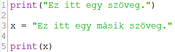
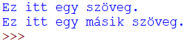
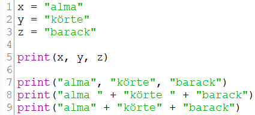
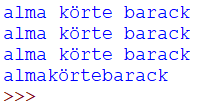

A Python eredetileg csak konzolos alkalmazások
írására volt alkalmas, ahol a szabvány kimenet
(standard output) a konzol. Erre a print()
függvényt használja.
A print() függvény csak karakterlánc (string)
típusú adatokat fogad paraméterként.

A fenti kód eredménye.

Több karakterláncot egymás mellé kétféleképpen
írhatunk.

A fenti kód eredménye.

Látható, hogy a +-esetben plusz szóközöket
kellett elhelyezni a karakterláncok végére, mert
alapból nem teszi meg.